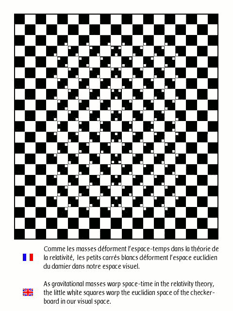
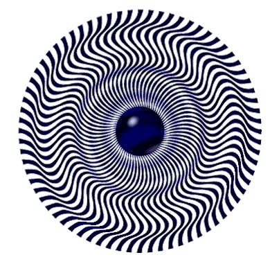

I just got this in an email.
That's awesome.
*_*
I saw that a loong time ago.
MY favorite one:

MY favorite one:
Both illusions are pretty cool. I bet you could search on Google for "Illusions", and you'll get a whole bunch of illusions. I'll see if I'm right and I'll try to post one...if there is one...
Well, I found one, but it's too big. It would drive people crazy. So I won't post it unless someone wants me to...which they probably don't.
Here's good one.

28!!!
Actually it's zero!
if you look at them, they go away.
That's the illusion. ")
Ha this ones cool
Just realised what that was. 
@_@
Has anyone ever seen the Jesus one? You look at a pic for a minute then look at a window and there's a picture of Jesus. *Searchs web for pic*
http://www.eyetricks.com/jesus.htm
That's it, if you take it into something like paint and invert the colours you can see how it works.
http://www.eyetricks.com/jesus.htm
That's it, if you take it into something like paint and invert the colours you can see how it works.
That Jesus one is a little freaky.
couple of good ones off a cool site...
Tables
chalk 1
chalk 2
self protrait
sony loves you
the whole site is pretty cool actually
Tables

chalk 1
chalk 2
self protrait
sony loves you
the whole site is pretty cool actually
The second and third ones are pretty cool.
Here's another
Here's another

Whoa, I actually had trouble convincing myself that one wasn't actually an animation.

rescuethe chalk drawings are amazing. you know the one of the swimmer had to have the leg incredibly long to get the illusion to look like it was comming out of the water. here are some other cool ones:
trap
coke bottle
this guy is totally amazing. his pitures are just mind-blowing. here's his page. enjoy
trap
coke bottle
this guy is totally amazing. his pitures are just mind-blowing. here's his page. enjoy
Those are awesome
I found a page of illuions a while ago, but I don't remember where from.
HEY THIS ONE IS CRAZY COOL
BUT ITS A FILE
BUT ITS A FILE
Call me overly cautious, but there's no way I'm running that.
Here's one large image
Ha, that one is great. I have a poster of that on my wall, except without the snake tounges.
theres nothing wrong with my file its just a cool spinning thing
haha i fell for it
I knew smething was going to happen when the next button went away
but smart me I didn't do anyhing to stop it
I knew smething was going to happen when the next button went away
but smart me I didn't do anyhing to stop it
That Scared The HELL Out ME!!!!!!!!!!!!!!!!!!!!!!!!!!!!!!!!!!!!!!!!!!!!!!!!!!!!!!!!!!!!!
!!!!!!!!!!!!!!!!!!!!!!!!!!!!
!!!!!!!!!!!!!!!!!!!!!!!!!!!!
WAAAAAAAAAAAAAAA!!!!!!!!!!!!!
it was funny the second time watching
Strange, xplode gets unsuspended and he starts spamming again.
EDIT: picture didn't work, too lazy to find page url to link to, & it was a bad idea anyway. This post never existed.
Optical illusions, you say? Just take it from the M.C.- Escher, that is! http://en.wikipedia.org/wiki/Category:Work...by_M._C._Escher
Lame enough joke for you?
Lame enough joke for you?
i dont get it 
I thought M.C. was some obscure rap phrase. Man, I got the bad part from my white heritage...
Ydit: Tipo...
Ydit: Tipo...
Ha this ones cool
wtf is that? i dont get it.
@sucker:
Is This Spamming???
Is This Spamming???
Well that's not spamming, but what you did before was. I quite like that one, but after a while I can condition myself to believe that it's just shapes, rather than a 3d object.
@sucker:
Is This Spamming???
Double posting certainly is.
12 or 13???
That's funny, but not really an illusion.
I know how to draw one of those triangle illusions, I draw them quite well nowadays.
YAY!!! Illusions are fun. And blackhawk, that is one of my favorite illusions of all time!

I thought this looked pretty cool.

haha i fell for it
I knew smething was going to happen when the next button went away
but smart me I didn't do anyhing to stop it
Hmm. I knew instantly what it was playing at from the first. As soon as it started animating, I knew the time had come to close the window.
Incidentally, whenever I go to an externally linked site, I turn off my sound first...
@First Post (Blackhalk), I've seen that before. T'was when I was trying to get onto ebaumsworld two years ago. I've stopped going onto that though.
^^^What is that polar thing supposed to be??
@xplode, That triangle is an illusion. And a question to go with it: Which side is facing towards you?
^^^What is that polar thing supposed to be??
@xplode, That triangle is an illusion. And a question to go with it: Which side is facing towards you?
That isn't an old man, that is a dog on the ground, a man with a walking stick, a woman with some hay (or more), sunlight on the ground, and an archway.Quote: guy that plays N a lotI don't get this.